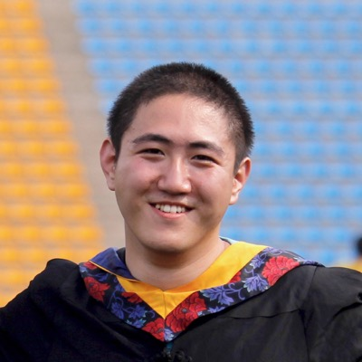
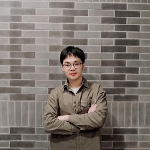
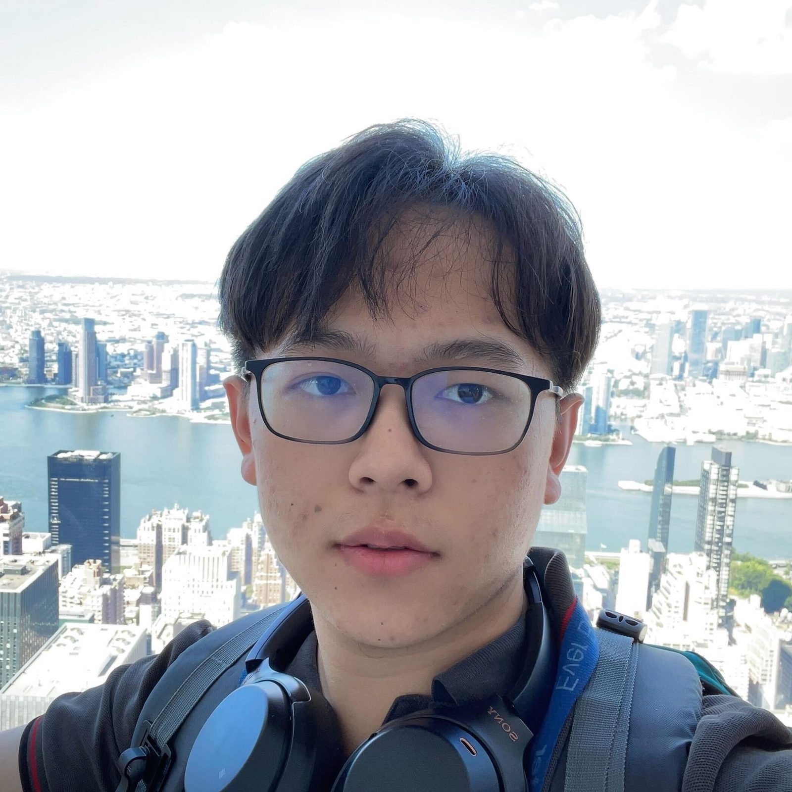
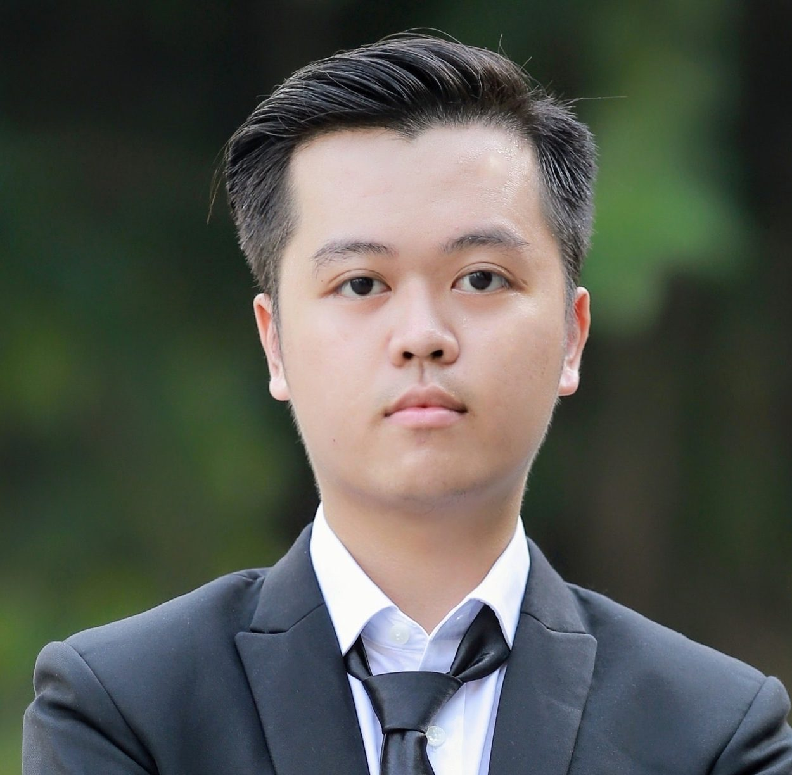
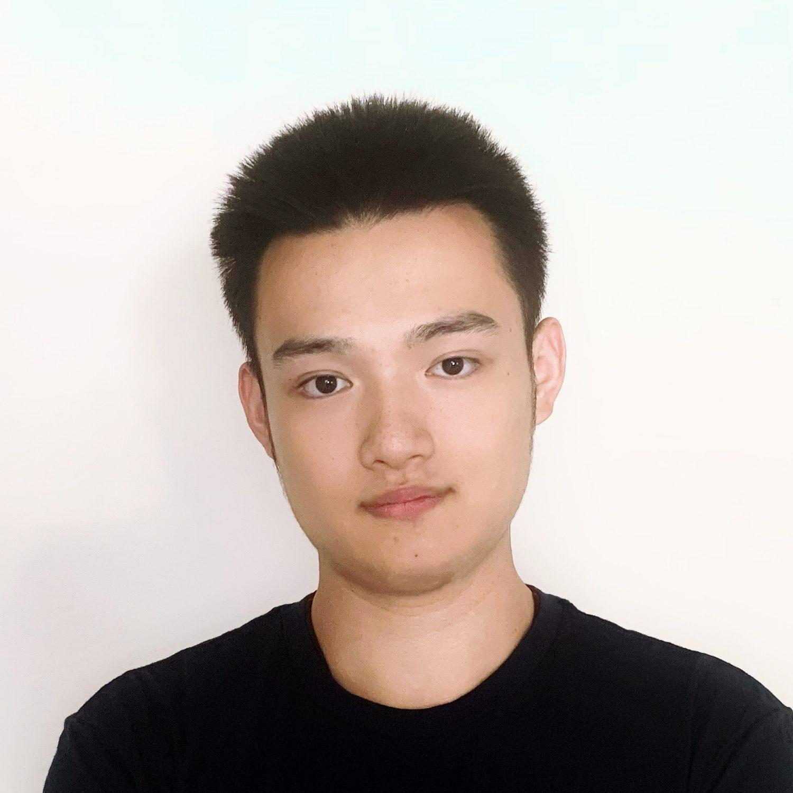

Jing BiPh.D. Student
Mingqian FengPh.D. Student

Chao HuangPh.D. Student

Andy LiuUndergraduate
Susan LiangPh.D. Student

Nguyen Manh NguyenPh.D. Student
Luchuan SongPh.D. Student
Yunlong TangPh.D. Student
Ali VosoughiPh.D. Student

Rongyi ZhuMasters Student
Zeliang ZhangPh.D. Student